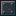

Реакторная обшивка
alaindustrial:reactor_casing
Сводка
Реакторная обшивка — стена, пол и потолок реакторной комнаты. Это не декоративный блок и не «армированный камень»: комната ядерного реактора — не один блок с сеткой слотов, а физическая постройка, и обшивка — тот материал, из которого её кладут. Обычный камень, блок железа и ванильное стекло сканер комнаты считает дырой ровно так же, как воздух.
Из чего состоит оболочка
Оболочка — шесть граней осевого параллелепипеда. Каждая её клетка обязана быть одним из семи блоков; любой другой блок и любой воздух в грани — брешь:
| Блок | Роль в оболочке | Сколько нужно |
|---|---|---|
| Реакторная обшивка | стена / пол / потолок | всё остальное |
| Реакторная лампа | освещение изнутри; для сканера — та же обшивка | сколько угодно, включая ноль |
| Реакторное стекло | окно, полноправная часть стены | не больше (30 %) оболочки |
| Шлюзовая дверь | единственный вход | минимум одна |
| Реакторный ввод | ввод трубы сквозь стену: вода внутрь, пар наружу | сколько угодно, включая ноль |
| Реакторный вывод | розетка для кабеля; для сканера — та же обшивка | сколько угодно, включая ноль |
| Контроллер | мозг комнаты | ровно один, только в вертикальной стене |
Обшивка — единственный из семи блоков без собственных условий: она годится в любую клетку любой грани, включая рёбра и углы, которые для двери и контроллера запрещены. Лампа наследует эти же свойства (сканер классифицирует её как обшивку) и потому в лимит стекла не входит: осветить комнату не значит потратить бюджет окон.
Отдельно стоит реакторная кнопка: она частью оболочки не является и клетку не занимает — вешается на стену изнутри и служит только для того, чтобы подать импульс на дверь. Ставить её на место блока оболочки нельзя: сканер прочитает клетку как брешь.
Размеры комнаты
Считается внутренний объём — то, во что игрок войдёт, а не габарит постройки:
| Поле | Значение |
|---|---|
| Минимум (внутри) | 3×3×3, оболочка 5×5×5 = 98 блоков |
| Максимум (внутри) | 12×12×12, оболочка 14×14×14 = 1016 блоков |
| Форма | только осевой параллелепипед |
L-образные, ступенчатые и купольные комнаты не поддерживаются — не потому, что «запрещены», а потому что там, где стена должна быть прямой, стоит не блок оболочки, и сканер честно называет это брешью с координатами.
Растить комнату — значит разобрать её и сложить больше. Никакого «апгрейда на месте» нет, но и потерь тоже: все блоки оболочки дропаются сами собой при добыче киркой. Это собственность игрока, а не расходный сегмент структуры вроде секций дистилляционной колонны.
Бесшовный вид
У обшивки, стекла, реакторный ввода, лампы, двери и контроллера есть блокстейт, а у четырёх первых — ещё и edge. Пока комната не собрана, все они рисуются со светлой рамкой по краю — так видно каждый отдельный блок. Как только контроллер засчитал оболочку, он перекрашивает всю её, и стена начинает читаться одной поверхностью, а не штабелем ящиков.
| Клетка собранной оболочки | edge | Как выглядит | |
|---|---|---|---|
| Грань (одна координата вне коробки) | да | нет | без рамки — сплошная панель |
| Ребро или угол (две-три координаты вне коробки) | да | да | рамка остаётся |
| Любая клетка несобранной оболочки | нет | нет | рамка на всех гранях |
Рёбра, сохраняющие рамку, — не исключение, а вторая половина замысла. Стена 14×14 без единого шва превращается в безликую плиту; рамка по рёбрам рисует контур постройки, и комната читается как один объект с очерченными краями, а не как пятно.
| Что | Как сделано |
|---|---|
| Кто ставит флаги | только контроллер, сам блок их не трогает |
| Что переписывается | лишь те клетки, у которых значение изменилось |
| Флаг обновления | 2 — свойства косметические, соседей будить незачем |
| По какой коробке снимается | по запомненной контроллером, а не по результату текущего скана (см. ниже) |
| Общие грани | скрываются между блоками одного вида, поэтому большое окно не рисует внутреннюю сетку |
Ванильный рендерер не умеет connected textures, поэтому шов убран в самой графике: у каждого блока оболочки три варианта текстуры — несобранный, собранная грань и собранное ребро. Рамка и есть то, что рисует сетку, — убрать её на гранях и оставить на рёбрах значит склеить стену и обвести её по краю.
Почему коробка запоминается. Провалившийся скан ничего не измеряет, поэтому заливка, идущая от результата текущего скана, умеет только включать флаг: пробей дыру в готовой комнате — и она останется бесшовной и освещённой. Именно это нашёл первый игровой тест. Контроллер хранит последнюю коробку, которую засчитал (и пишет её в NBT, чтобы пережить выгрузку чанка), и при провале скана гасит именно её.
Практический смысл шире косметики — это ещё и внешний индикатор. Собранную комнату видно с другого конца базы, не открывая экран, и по этому же флагу лампа зажигает свет внутри. У двери флаг тоже есть (контроллер пишет его во все клетки оболочки), но модель двери от него не меняется, и edge у двери с контроллером нет вообще — «бесшовными» становятся четыре блока: обшивка, стекло, реакторный ввод и лампа.
Энергия
| Поле | Значение |
|---|---|
| Роль | нет |
| Буфер (EU/FE) | 0 |
| Макс. вход / выход (EU/FE/такт) | н/п |
Обшивка энергию не проводит и не хранит. Кабель, упёршийся в стену, останавливается на ней; чтобы завести питание внутрь, предназначен реакторный ввод.
Свойства блока
Полный куб, окклюдер: стена из сотен блоков не должна заставлять клиент рисовать внутренние грани.
| Поле | Значение |
|---|---|
| Форма | полный куб 16³ (окклюдер) |
| Прочность | 5.0 |
| Взрывоустойчивость | 30.0 |
| Инструмент | кирка (обязательна для дропа) |
| Звук | металл |
| Блокстейты | , edge — оба косметические, см. «Бесшовный вид» |
Взрывоустойчивость 30.0 — сознательно намного выше машинных 6.0. Комната и есть то, что стоит между расплавом и остальным миром; если бы криппер под стеной вскрывал оболочку, вся механика герметичности держалась бы на удаче.
Рецепты
Крафт — ×8 за раз.
T T T T = #c:plates/tempered_iron ×6
S C S S = экранирующая пластина ×2
T T T C = машинный корпус ×1Цена одного блока — восьмая часть этой сетки: четверть экранирующей пластины, три четверти пластины закалённого железа и одна восьмая машинного корпуса.
Так было не всегда: первая версия рецепта просила 4 экранирующие пластины на 4 блока, то есть по целой пластине за блок. После первого игрового прогона выяснилось, что до сколько-нибудь заметной комнаты в этом темпе не доживает никто: минимальная коробка съедала около 44 палладиевых слитков (сейчас — 19), почти всё — на глухую стену, которая в игре не делает ничего. Дефицитный палладий перенесён туда, где он читается как содержание постройки (дверь, контроллер, реакторный ввод), а масса стены оплачивается дешёвым закалённым железом.
Материальная цепочка
Обшивка дорога не сама по себе, а через сплав, которого до в моде не было:
палладиевая руда (только Ад, алмазная кирка) ──дробитель──▶ 2 пыли ──печь──▶ палладиевый слиток
железный слиток ──печь──▶ закалённое железо
1 палладиевый слиток + 3 закалённого железа ──сплавочная печь, 1200 EU/FE──▶ 3 слитка экранирующего сплава
слиток ──кузнечный молот / компрессор 260 EU/FE──▶ экранирующая пластина
2 пластины ──кузнечный молот / компрессор 260 EU/FE──▶ укреплённая экранирующая пластина. Обратного пути в пыль у сплава нет — как и у остальных сплавов мода.
Ни одной новой машины цепочка не требует: дробитель, сплавочная печь, компрессор и кузнечный молот существуют давно. Реактор требует не оборудования, а похода в Ад.
Прогрессия
Тир: нет (блок пассивный). Требует: палладий, закалённое железо, машинный корпус. Открывает: реакторную комнату целиком — контроллеру нечего сканировать, пока оболочку не из чего сложить.
Побочный, но важный эффект: до палладий добывался «на будущее», потребителя у него не было ни одного. Экранирующий сплав — его первый потребитель, и сразу главный.
Связанное
Ядерный реактор — комната целиком и её механика. Реакторное стекло — окно и его лимит в 30 % оболочки. Реакторная лампа — та же обшивка, но светящаяся изнутри. Шлюзовая дверь — обязательный элемент оболочки. Реакторная кнопка — не часть оболочки, но без неё изнутри не выйти. Реакторный ввод — как трубы и кабель проходят стену. Палладий — материал, ради которого нужен Ад.
Крафт
Крафт на верстаке
▶
×8
Реакторная обшивка
Используется в
Крафт на верстаке
▶
Реакторный ввод